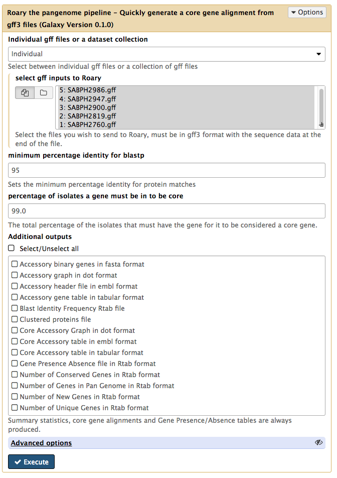
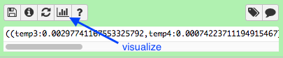

Find pan-genomes using Roary (in Galaxy)
A concept in comparative microbial genomics is core and pan genomes. If we analyse DNA from several bacterial strains, we may want to know which genes they have in common and which are unique to some strains.
-
The core genome is the group of genes shared by all strains in the clade of interest. Gene sequences are similar but not necessarily identical. “Core genome SNPs” are those SNPs found in the genes in the core genome; i.e. at a particular site, the nucleotide varies. We can use these SNPs to infer relationships between the strains.
-
The accessory genome is the group of genes that are not in all the strains. These genes may be in one or more strain.
-
The pan genome is the sum of the core and accessory genomes. That is, a combination of all the genes that are found in the clade of interest.
Bacteria can horizontally-transfer genes to other bacteria via plasmids, and so their accessory genome can be large relative to those of eurkaryotes. Bacterial accessory genomes often house genes for drug resistance.
This tutorial demonstrates how to calculate the pan and core genomes of a set of input bacterial samples, using the tool Roary.
Get data
Input:
- annotated genome in GFF3 format, per sample (e.g. output from Prokka)
- samples must be from same species
Our data:
- Five strains of Staphylococcus aureus, in .gff format.
- Galaxy or swift location: TBA

Run
Run Roary
- In Galaxy, go to
Tools → NGS Analysis → Pan Genomes → Roary - Set the following parameters (leave everything else unchanged):
Individual gff files or a dataset collection : Individualselect gff inputs to Roary : Select all the .gff input files
Your tool interface should look like this:

- Click
Execute
What does Roary do
- converts coding sequences into protein sequences
- clustered these protein sequences by several methods
- further refines clusters into orthologous genes
- for each sample, determines if gene is present/absent: produces
gene_presence_absence.csv - uses this gene p/a information to build a tree, using FastTree: produces
accessory_binary_genes.fa.newick - overall, calculates number of genes that are shared, and unique: produces
summary_statistics.txt - aligns the core genes (if option used, as above) for downstream analyses
Output
There are three output files. (TBA: should be four, if newick tree available)
Summary statistics
Click on the eye icon. This shows a table of counts of shared genes (core genome) and total genes (pan genome).

Core gene alignment
Click on the disk icon under this file to download it.
Gene presence/absence
Click on the disk icon under this file to download it. Open and view in spreadsheet software.
- Column 3 shows the annotated gene name.
- Column 4 shows the number of isolates that the gene was found it (in this case, ordered from 5 (all) to 1).
Newick TBA
- need the accessory_binary_genes.fa.newick (not just .fa) output file
Infer phylogeny using core gene snps
Roary has produced an alignment of the core genes. We can use this alignment to infer a phylogenetic tree of the isolates.
- In Galaxy, go to
Tools → NGS Analysis → NGS:Phylogenetics → Phylogeneitc reconstruction with RaXML -
Set the following parameters (leave everything else unchanged):
Source file :Roary on data x, data x, and others Core Gene Alignment Model Type : NucleotideSubstitution Model : GTRGAMMA
-
Click
Execute
There are six output files.
Click on

- These isolates are all very closely related and so the structure of the tree is narrow.
- To expand, go to the right hand box for “Phyloviz Settings”. Change the Phylogenetic Spacing to 2500 and the Vertical Spacing to 30.
To return to the main Galaxy screen, go to the top panel and click on “Analyze Data”.
Click on the disk icon under the
Re-name with the file extension
Vizualize with Phandango
If not done already, copy these files to your local computer:
-
The
raxml.tree (or theaccessory_binary_genes.fa.newick ). -
gene_presence_absence.csv
Go to http://phandango.net
- drag and drop the two files onto the landing page.
- view the tree of samples and their core and pan genomes
- each blue coloured column is a gene: genes are present or absent in each isolate
- the core genes are shared by all isolates